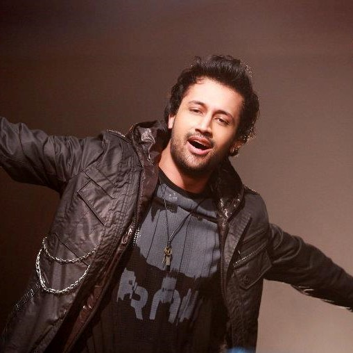

Atif Aslam
About Artist
On 17 July 2004, Aslam released his first album titled Jal Pari (meaning 'Mermaid') which was an instant hit. Several songs from his debut album, such as: "Bheegi Yaadein", "Ehsaas", "Mahi Ve", "Ankhon Sey" and the title track "Jal Pari" went on to become major hits and charted across countries in the subcontinent. Since Jal's album, Aadat, and Aslam's album, Jal Pari, shared certain tracks such as "Aadat", "Bheegi Yaadein" and "Ankhon se", a war over rights began which resulted in both sides claiming to possess hard proof to support their respective claims that they alone owned these songs.
He got his first breakthrough in Bollywood when director Mahesh Bhatt called Aslam to seek his consent to include "Woh Lamhey" in the soundtrack of his new motion picture, Zeher (2005). Following Jal Pari, Aslam released two more successful solo albums, Doorie and Meri Kahani. He also recorded many songs for Bollywood, that were successful too.
Four songs from Aslam's second album Doorie were featured in two films. Two of them; "Yakeen" and "Ehsaas", and a single "Aadat" from his first album Jal Pari, featured in Ramin Bahrani's 2005 film Man Push Cart which has won international awards and was praised by the critics. Two other songs, "Doorie" and "Maula", were selected in 2010 for the soundtrack of the Spanish Beauty, the Hindi version of the 2005 Mexican film La mujer de mi hermano directed by Ricardo de Montreuil. He then sang two songs; "Bol Ke Lab Azaad Hain" and "Mori Araj Suno", in Mira Nair's 2012 film The Reluctant Fundamentalist.